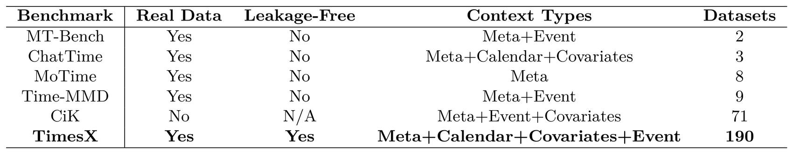
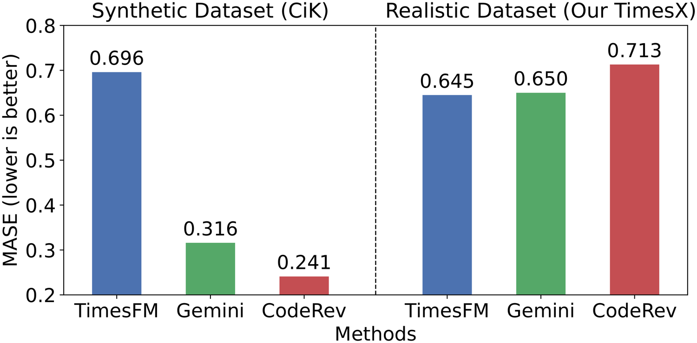
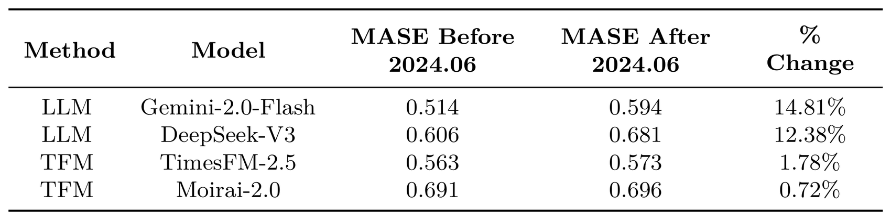
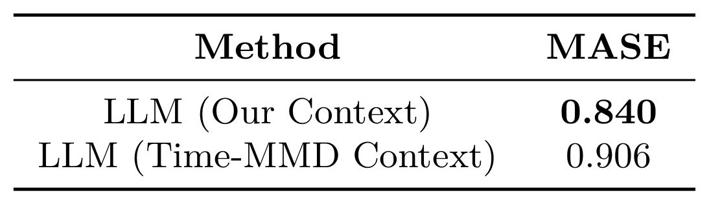
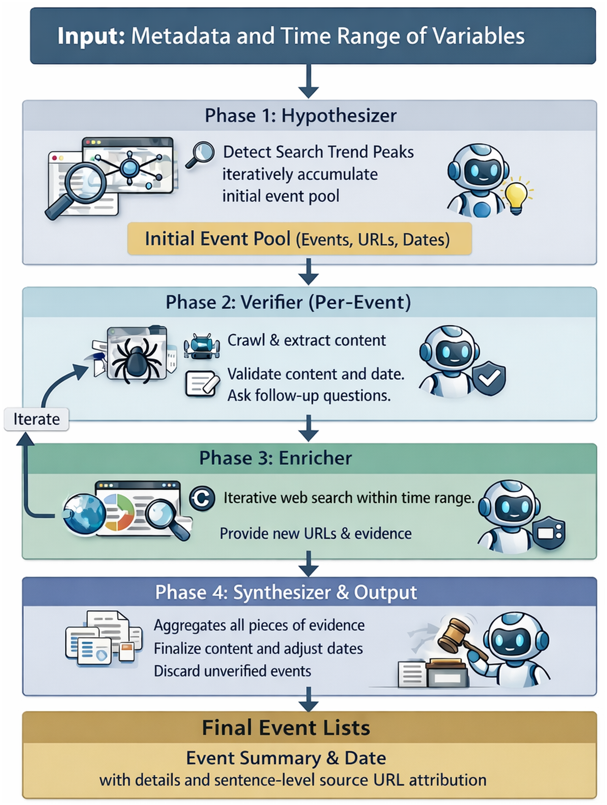
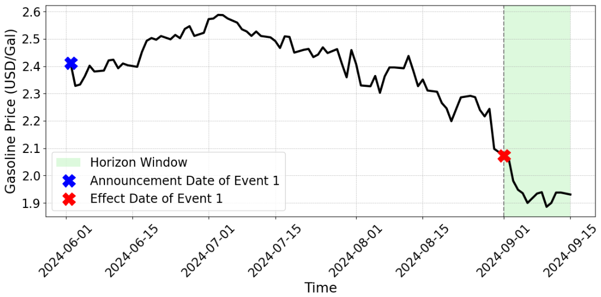
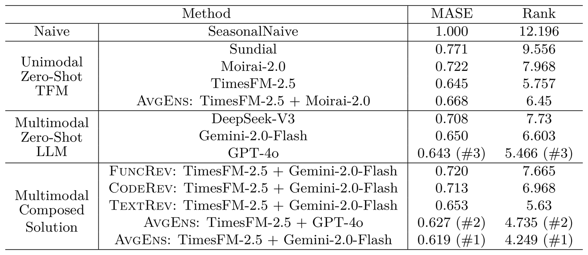
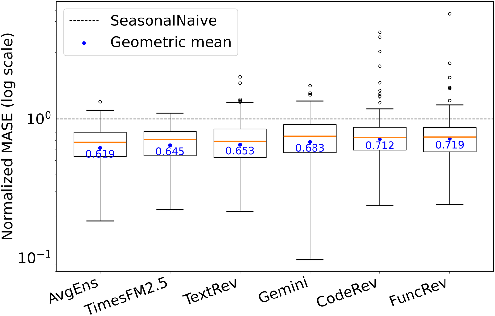
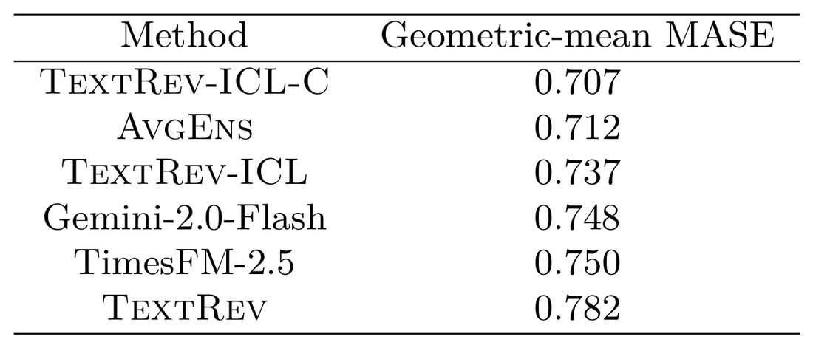

Overview
A benchmark built for realistic multimodal forecasting
TimesX studies how pretrained time-series foundation models and language models behave when forecasts require both historical numeric signals and natural-language context such as metadata, calendar effects, covariates, and time-stamped events.

Benchmark Design
Real-World Data, Refreshable (Continuously Mitigating Leakag), and Comprehensive High-Quality Contex
Three principles separate TimesX from prior benchmarks. Each is backed by a controlled experiment showing where existing evaluations can be misleading.



Construction Pipeline
An automatic dataset agent driven by multi-agent collaboration and adversarial verification
The textual event pipeline uses constrained LLM agents and time-bounded retrieval to discover candidate events, verify sources and timestamps, enrich missing details, and synthesize grounded event narratives.
- Deep research enriches the details. An Enricher agent runs iterative, time-bounded web searches and merges multiple sources to fill in missing event information.
- Adversarial verification and collaboration mitigate hallucination. A Hypothesizer and a Verifier act adversarially to filter out fabricated or leaked content, then collaborate with the Enricher to raise event quality.
- Time-bounded search and LLM date correction prevent leakage. Programmatic date-range constraints on Google search, combined with LLM timestamp correction, keep every annotated event strictly before its forecast window.

Data Sample
One variable, paired with its four context types

GAS_PRICE example from TimesX: daily gasoline price
(USD/Gal), with the forecast horizon window highlighted and the event announcement/effect dates marked.
MetadataGasoline price (USD/Gal) in the Commodity Price domain, at daily frequency. Prediction target period: 2024-09-01 to 2024-09-15.
DateHistorical data as (timestamp, value): (2024-06-02, 2.4116), (2024-06-03, 2.3279), … Upcoming holidays in the prediction window: Labor Day (2024-09-02).
CovariatesFrom 2024-06-01 to 2024-08-31: (1) Brent Crude Oil (USD/BBL): maximum 87.43 on July 4, …, with an overall downward trend; (2) …
Events(1) On June 2, 2024, OPEC+ agreed to extend deep oil output cuts; the 2.2 million bpd cut would be extended until September 2024, then gradually phased out. Sources: [1] [2] [3]; (2) …
Empirical Findings
What our experiments on TimesX reveal
- Simple ensemble methods are currently the most effective composition.
- Training-free agentic solutions are often unstable.
- Providing in-context samples is a promising direction.
- We look forward to future fine-tuning work that addresses the problem more thoroughly.



Citation
BibTeX
@inproceedings{liu2026timesx,
title = {Rethinking Multimodal Time-Series Forecasting Evaluation},
author = {Liu, Haoxin and Zhou, Yichen and Sen, Rajat and
Prakash, B. Aditya and Das, Abhimanyu},
booktitle = {Proceedings of the 43rd International Conference on Machine Learning},
year = {2026}
}